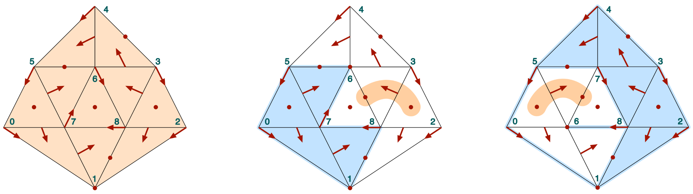
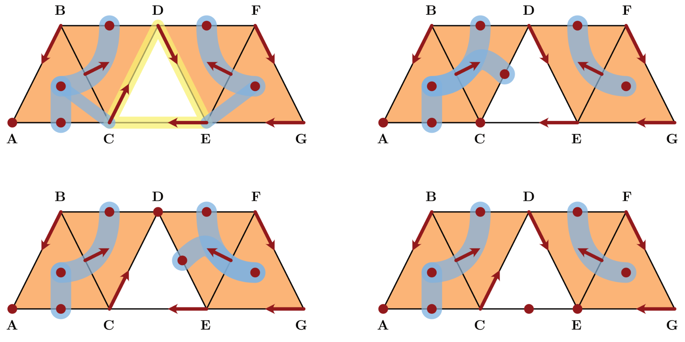

Examples
In the following we discuss a number of connection matrix examples.
Critical flow on a simplex
ConleyDynamics.example_critical_simplex — Methodlc, mvf = example_critical_simplex(dim)Create a simplicial complex of dimension dim as well as a multivector field on it in which every cell is critical.
The function returns the Lefschetz complex lc over GF(2) and the multivector field mvf.
Examples
julia> lc, mvf = example_critical_simplex(2);
julia> cm = connection_matrix(lc, mvf);
julia> sparse_show(cm.matrix)
[0 0 0 1 1 0 0]
[0 0 0 1 0 1 0]
[0 0 0 0 1 1 0]
[0 0 0 0 0 0 1]
[0 0 0 0 0 0 1]
[0 0 0 0 0 0 1]
[0 0 0 0 0 0 0]
julia> print(cm.labels)
["A", "B", "C", "AB", "AC", "BC", "ABC"]Combinatorial flows on a cylinder and a Moebius strip
ConleyDynamics.example_moebius — Methodlc1, mvf1, lc2, mvf2 = example_moebius(p)Create two simplicial complexes for a cylinder and Moebius strip, respectively, together with associated multivector fields on them.
The function returns the Lefschetz complexes lc1 and lc2, as well as the multivector fields mvf1 and mvf2. Both complexes are over a field with characteristic p. Positive prime characteristic uses the finite field GF(p), while zero characteristic gives the rationals.
The multivector field is the same, and it has one critical cell each in dimension 1 and 2 in the interior of the strip. The boundary consists of two periodic orbits for lc1 and mvf1, and of one periodic orbit in the Moebius case lc2 and mvf2. The latter case leads to different connection matrices for the fields GF(2) and GF(7), for example.
Examples
julia> lc1, mvf1, lc2, mvf2 = example_moebius(0);
julia> lc2p2 = lefschetz_gfp_conversion(lc2,2);
julia> lc2p7 = lefschetz_gfp_conversion(lc2,7);
julia> cmp2 = connection_matrix(lc2p2, mvf2);
julia> cmp7 = connection_matrix(lc2p7, mvf2);
julia> sparse_show(cmp2.matrix)
[0 0 0 0]
[0 0 0 1]
[0 0 0 0]
[0 0 0 0]
julia> sparse_show(cmp7.matrix)
[0 0 0 0]
[0 0 0 1]
[0 0 0 2]
[0 0 0 0]Nonunique connection matrices

ConleyDynamics.example_nonunique — Methodlc1, lc2, mvf, coords1, coords2 = example_nonunique()Create two representations of a simplicial complex and one multivector field which illustrates nonunique connection matrices.
The two complexes lc1 and lc2 represent the same simplicial complex over GF(2), but differ in the ordering of the labels.
The function returns the Lefschetz complexes lc1 and lc2, as well as the multivector field mvf. If desired for plotting, the fourth and fifth return values coords1 and coords2 give vectors of coordinates for the vertices of the two complexes.
Examples
julia> lc1, lc2, mvf = example_nonunique();
julia> cm1 = connection_matrix(lc1, mvf);
julia> cm2 = connection_matrix(lc2, mvf);
julia> sparse_show(cm1.matrix)
[0 0 0 1 0 1 0 0 0]
[0 0 0 1 0 1 0 0 0]
[0 0 0 0 0 0 0 1 1]
[0 0 0 0 0 0 1 1 0]
[0 0 0 0 0 0 0 1 0]
[0 0 0 0 0 0 1 1 0]
[0 0 0 0 0 0 0 0 0]
[0 0 0 0 0 0 0 0 0]
[0 0 0 0 0 0 0 0 0]
julia> print(cm1.labels)
["1", "6", "68", "18", "34", "56", "057", "238", "678"]
julia> sparse_show(cm2.matrix)
[0 0 0 1 0 1 0 0 0]
[0 0 0 1 0 1 0 0 0]
[0 0 0 0 0 0 1 0 1]
[0 0 0 0 0 0 1 1 0]
[0 0 0 0 0 0 0 1 0]
[0 0 0 0 0 0 1 1 0]
[0 0 0 0 0 0 0 0 0]
[0 0 0 0 0 0 0 0 0]
[0 0 0 0 0 0 0 0 0]
julia> print(cm2.labels)
["1", "7", "67", "18", "34", "56", "057", "238", "678"]Examples from MW-2023
The following examples are taken from [MW23].

ConleyDynamics.example_MW_fig02 — Methodlc, mvf, coords = example_MW_fig02(mvftype)Create the simplicial complex and multivector field for the example from Figure 2 in the connection matrix paper by Mrozek & Wanner.
Depending on the value of mvftype, return the periodic orbit (0=default) or one of the three gradient (1,2,3) examples.
The function returns the Lefschetz complex lc over the rational field and the multivector field mvf. If desired for plotting, the third return value coords gives a vector of coordinates for the vertices.
Examples
julia> lc, mvf = example_MW_fig02(0);
julia> cm = connection_matrix(lc, mvf);
julia> print(cm.labels)
["A", "C", "CE", "AC", "BD", "DF", "ABC", "EFG"]
julia> full_from_sparse(cm.matrix)
8×8 Matrix{Rational{Int64}}:
0 0 0 -1 -1 0 0 0
0 0 0 1 1 0 0 0
0 0 0 0 0 0 0 0
0 0 0 0 0 0 -1 0
0 0 0 0 0 0 1 0
0 0 0 0 0 0 0 1
0 0 0 0 0 0 0 0
0 0 0 0 0 0 0 0ConleyDynamics.example_MW_fig01 — Methodlc, mvf = example_MW_fig01()Create the simplicial complex and multivector field for the example from Figure 1 in the connection matrix paper by Mrozek & Wanner.
The function returns the Lefschetz complex lc over GF(2) and the multivector field mvf.
Examples
julia> lc, mvf = example_MW_fig01();
julia> cm = connection_matrix(lc, mvf);
julia> sparse_show(cm.matrix)
[0 0 0]
[0 0 1]
[0 0 0]
julia> print(cm.labels)
["D", "AC", "ABC"]ConleyDynamics.example_MW_fig03 — Methodlc, mvf = example_MW_fig03()Create the Lefschetz complex and multivector field for the example from Figure 3 in the connection matrix paper by Mrozek & Wanner.
The function returns the Lefschetz complex lc over GF(2) and the multivector field mvf.
Examples
julia> lc, mvf = example_MW_fig03();
julia> cm = connection_matrix(lc, mvf);
julia> sparse_show(cm.matrix)
[0 0 0 0]
[0 0 0 0]
[0 0 0 0]
[0 0 0 0]
julia> print(cm.labels)
["BD", "DF", "AC", "CE"]ConleyDynamics.example_MW_fig04 — Methodlc1, lc2, mvf = example_MW_fig04()Create two representations of the Lefschetz complex and the multivector field for the example from Figure 4 in the connection matrix paper by Mrozek & Wanner.
The complexes lc1 and lc2 are just two representations of the same complex, but they lead to different connection matrices. Both Lefschetz complexes are defined over the finite field GF(2).
The function returns the Lefschetz complexes lc1 and lc2, as well as the multivector field mvf.
Examples
julia> lc1, lc2, mvf = example_MW_fig04();
julia> cm1 = connection_matrix(lc1, mvf);
julia> cm2 = connection_matrix(lc2, mvf);
julia> full_from_sparse(cm1.matrix)
4×4 Matrix{Int64}:
0 0 0 0
0 0 0 1
0 0 0 1
0 0 0 0
julia> full_from_sparse(cm2.matrix)
4×4 Matrix{Int64}:
0 0 0 0
0 0 0 0
0 0 0 1
0 0 0 0ConleyDynamics.example_MW_fig11 — Methodlc, mvf = example_MW_fig11(mvftype)Create the Lefschetz complex and multivector field for the example from Figure 11 in the connection matrix paper by Mrozek & Wanner.
Depending on the value of mvftype, return the multivector (0=default) or one of the two combinatorial vector field (1,2) examples.
The function returns the Lefschetz complex lc over the rationals and the multivector field mvf.
Examples
julia> lc, mvf = example_MW_fig11(1);
julia> cm = connection_matrix(lc, mvf);
julia> full_from_sparse(cm.matrix)
5×5 Matrix{Rational{Int64}}:
0 0 1 -1 -1
0 0 1 0 0
0 0 0 0 0
0 0 0 0 0
0 0 0 0 0Examples from BKMW-2020
The following examples are taken from [BKMW20].
ConleyDynamics.example_BKMW20_fig1 — Methodlc, mvf, coords = example_BKMW20_fig1()Create the simplicial complex and multivector field for the example from Figure 1 in the FoCM 2020 paper by Batko, Kaczynski, Mrozek, and Wanner.
The function returns the Lefschetz complex lc and the multivector field mvf. If desired for plotting, the third return value coords gives a vector of coordinates for the vertices. The Lefschetz complex is defined over the finite field GF(2).
Examples
julia> lc, mvf = example_BKMW20_fig1();
julia> cm = connection_matrix(lc, mvf);
julia> sparse_show(cm.matrix)
[0 0 0 0 1]
[0 0 0 0 0]
[0 0 0 0 1]
[0 0 0 0 0]
[0 0 0 0 0]
julia> print(cm.labels)
["A", "AD", "F", "BF", "DE"]ConleyDynamics.example_BKMW20_fig3 — Methodlc, mvf, coords = example_BKMW20_fig3()Create the simplicial complex and multivector field for the example from Figure 3 in the FoCM 2020 paper by Batko, Kaczynski, Mrozek, and Wanner.
The function returns the Lefschetz complex lc over the finite field GF(2) and the multivector field mvf. If desired for plotting, the third return value coords gives a vector of coordinates for the vertices.
Examples
julia> lc, mvf = example_BKMW20_fig3();
julia> cm = connection_matrix(lc, mvf);
julia> sparse_show(cm.matrix)
[0 0 0 0 1 0 1 0 0]
[0 0 0 0 0 1 0 0 0]
[0 0 0 0 1 1 1 0 0]
[0 0 0 0 0 0 0 0 1]
[0 0 0 0 0 0 0 1 0]
[0 0 0 0 0 0 0 0 0]
[0 0 0 0 0 0 0 1 0]
[0 0 0 0 0 0 0 0 0]
[0 0 0 0 0 0 0 0 0]
julia> print(cm.labels)
["D", "E", "F", "GJ", "BF", "EF", "HI", "ADE", "FGJ"]Examples References
See the full bibliography for a complete list of references cited throughout this documentation. This section cites the following references:
- [BKMW20]
- B. Batko, T. Kaczynski, M. Mrozek and T. Wanner. Linking combinatorial and classical dynamics: Conley index and Morse decompositions. Foundations of Computational Mathematics 20, 967–1012 (2020).
- [MW23]
- M. Mrozek and T. Wanner. Connection matrices in combinatorial topological dynamics, arXiv:2103.04269 (2023).